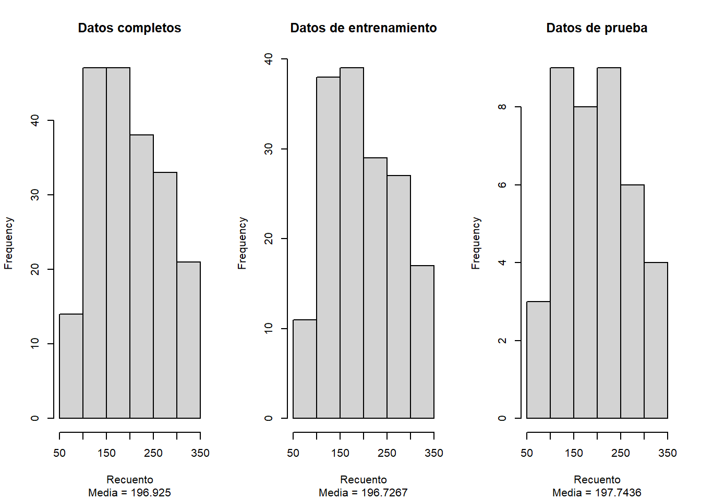
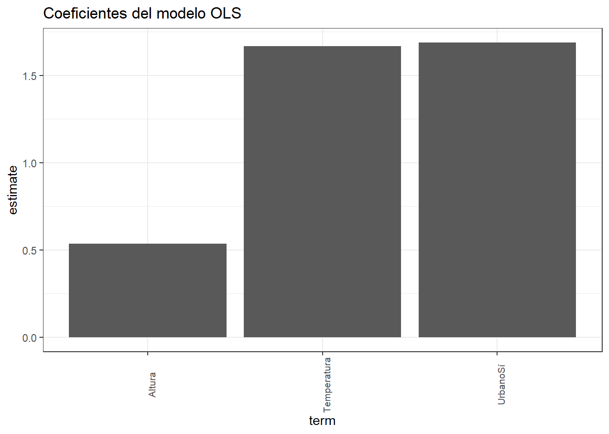
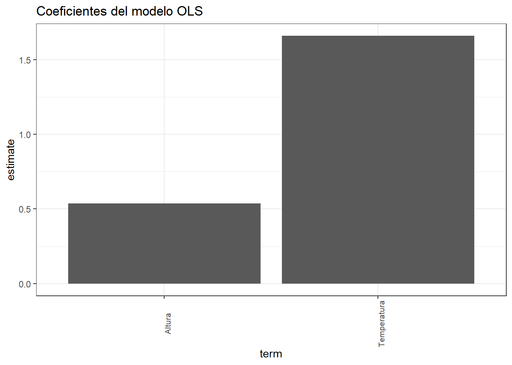

Chapter 4 Selección de variables paso a paso
4.1 Partición inicial de la base de datos
4.1.1 Resumen de la base de datos de entrenamiento
library(caret)
set.seed(6666)
train <- createDataPartition(y = datos$Recuento, p = 0.80, list = FALSE, times = 1)
datos.train <- datos[train, ]
datos.test <- datos[-train, ]
# summarytools::descr(datos.train)
summary(datos.train) Temperatura Altura Humedad Macho Urbano Recuento
Min. :12.00 Min. : 25 Min. :70.29 Machos :130 No:74 Min. : 67.0
1st Qu.:16.00 1st Qu.:141 1st Qu.:77.21 Hembras: 31 Sí:87 1st Qu.:134.0
Median :21.00 Median :231 Median :81.58 Median :190.0
Mean :20.62 Mean :255 Mean :81.95 Mean :196.7
3rd Qu.:25.00 3rd Qu.:367 3rd Qu.:88.01 3rd Qu.:254.0
Max. :30.00 Max. :495 Max. :94.31 Max. :333.0 4.1.2 Resumen de la base de datos de prueba
# summarytools::descr(datos.test)
summary(datos.test) Temperatura Altura Humedad Macho Urbano Recuento
Min. :12.00 Min. : 57.0 Min. :70.42 Machos :30 No:20 Min. : 83.0
1st Qu.:16.00 1st Qu.:133.5 1st Qu.:74.67 Hembras: 9 Sí:19 1st Qu.:137.0
Median :20.00 Median :255.0 Median :80.38 Median :195.0
Mean :20.03 Mean :257.6 Mean :81.44 Mean :197.7
3rd Qu.:23.50 3rd Qu.:367.5 3rd Qu.:88.61 3rd Qu.:250.0
Max. :28.00 Max. :494.0 Max. :94.78 Max. :321.0 4.1.3 Verificación de la distribución de la variable respuesta (Recuento)
par(mfrow = c(1,3))
hist(datos$Recuento,
main = "Datos completos",
sub = c("Media = 196.925"),
xlab = "Recuento")
hist(datos.train$Recuento,
main = "Datos de entrenamiento",
sub = c("Media = 196.7267"),
xlab = "Recuento")
hist(datos.test$Recuento,
main = "Datos de prueba",
sub = c("Media = 197.7436"),
xlab = "Recuento")
4.2 Forward
4.2.1 Resumen del modelo
step(object = lm(formula = Recuento ~ 1, data = datos.train),
direction = "forward",
scope = formula(lm(Recuento~.,data=datos)),
trace = F) -> modelo_forward
modelo_forward %>% summary
Call:
lm(formula = Recuento ~ Altura + Temperatura + Urbano, data = datos.train)
Residuals:
Min 1Q Median 3Q Max
-13.1978 -3.2243 -0.3167 2.4130 12.1485
Coefficients:
Estimate Std. Error t value Pr(>|t|)
(Intercept) 24.47646 1.88438 12.989 <0.0000000000000002 ***
Altura 0.53687 0.00290 185.140 <0.0000000000000002 ***
Temperatura 1.66862 0.07687 21.708 <0.0000000000000002 ***
UrbanoSí 1.68814 0.77633 2.175 0.0312 *
---
Signif. codes: 0 '***' 0.001 '**' 0.01 '*' 0.05 '.' 0.1 ' ' 1
Residual standard error: 4.88 on 157 degrees of freedom
Multiple R-squared: 0.9955, Adjusted R-squared: 0.9954
F-statistic: 1.164e+04 on 3 and 157 DF, p-value: < 0.000000000000000224.2.3 Coeficientes del modelo
library(tidyverse)
library(broom)
modelo_forward %>%
tidy %>%
filter(term != "(Intercept)") %>%
ggplot(aes(x = term, y = estimate)) +
geom_col() +
labs(title = "Coeficientes del modelo OLS") +
theme_bw() +
theme(axis.text.x = element_text(size = 8, angle = 90))
4.2.4 VIF de las variables seleccionadas
library(faraway)
modelo_forward %>% vif Altura Temperatura Urbano
1.008899 1.003479 1.012153 4.3 Backward
4.3.1 Resumen del modelo
step(object = lm(formula = Recuento ~ ., data = datos.train),
direction = "backward",
scope = list(upper = ~., lower = ~1),
trace = F) -> modelo_backward
modelo_backward %>% summary
Call:
lm(formula = Recuento ~ Temperatura + Altura + Urbano, data = datos.train)
Residuals:
Min 1Q Median 3Q Max
-13.1978 -3.2243 -0.3167 2.4130 12.1485
Coefficients:
Estimate Std. Error t value Pr(>|t|)
(Intercept) 24.47646 1.88438 12.989 <0.0000000000000002 ***
Temperatura 1.66862 0.07687 21.708 <0.0000000000000002 ***
Altura 0.53687 0.00290 185.140 <0.0000000000000002 ***
UrbanoSí 1.68814 0.77633 2.175 0.0312 *
---
Signif. codes: 0 '***' 0.001 '**' 0.01 '*' 0.05 '.' 0.1 ' ' 1
Residual standard error: 4.88 on 157 degrees of freedom
Multiple R-squared: 0.9955, Adjusted R-squared: 0.9954
F-statistic: 1.164e+04 on 3 and 157 DF, p-value: < 0.000000000000000224.3.3 Coeficientes del modelo
library(tidyverse)
library(broom)
modelo_backward %>%
tidy %>%
filter(term != "(Intercept)") %>%
ggplot(aes(x = term, y = estimate)) +
geom_col() +
labs(title = "Coeficientes del modelo OLS") +
theme_bw() +
theme(axis.text.x = element_text(size = 8, angle = 90))
4.3.4 VIF de las variables seleccionadas
library(faraway)
modelo_backward %>% vifTemperatura Altura Urbano
1.003479 1.008899 1.012153 4.4 Stepwise
4.4.1 Resumen del modelo
step(object = lm(formula = Recuento ~ 1, data = datos.train),
direction = "both",
scope = formula(lm(Recuento~.,data=datos)),
trace = F,
k = log(nrow(datos.train))) -> modelo_step
modelo_step %>% summary
Call:
lm(formula = Recuento ~ Altura + Temperatura, data = datos.train)
Residuals:
Min 1Q Median 3Q Max
-14.1057 -3.1063 -0.3891 2.5381 12.9691
Coefficients:
Estimate Std. Error t value Pr(>|t|)
(Intercept) 25.740129 1.813561 14.19 <0.0000000000000002 ***
Altura 0.536282 0.002921 183.60 <0.0000000000000002 ***
Temperatura 1.658877 0.077636 21.37 <0.0000000000000002 ***
---
Signif. codes: 0 '***' 0.001 '**' 0.01 '*' 0.05 '.' 0.1 ' ' 1
Residual standard error: 4.937 on 158 degrees of freedom
Multiple R-squared: 0.9954, Adjusted R-squared: 0.9953
F-statistic: 1.705e+04 on 2 and 158 DF, p-value: < 0.000000000000000224.4.3 Coeficientes del modelo
library(tidyverse)
library(broom)
modelo_step %>%
tidy %>%
filter(term != "(Intercept)") %>%
ggplot(aes(x = term, y = estimate)) +
geom_col() +
labs(title = "Coeficientes del modelo OLS") +
theme_bw() +
theme(axis.text.x = element_text(size = 8, angle = 90))
4.4.4 VIF de las variables seleccionadas
library(faraway)
modelo_step %>% vif Altura Temperatura
1.000067 1.000067 4.5 Comparación de modelos
| Método | \(AIC\) | \(R^2\) ajustado | \(RMSE\) | \(R^2\) | \(MAE\) |
| Forward | 973.239 | 99.54 | 4.8186162 | 0.9955231 | 3.7545822 |
| Backward | 973.239 | 99.54 | 4.8186162 | 0.9955231 | 3.7545822 |
| Stepwise | 976.0164 | 99.53 | 4.8906414 | 0.9953883 | 3.8580781 |
Se selecciona al modelo Stepwise, por lo que el modelo final considerará a las variables Altura y Temperatura. La variable Macho, no tiene gran aporte predictivo, por ello, fue descartado.